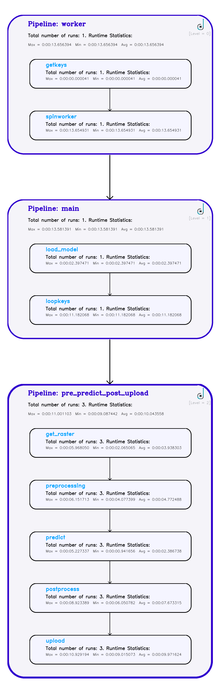
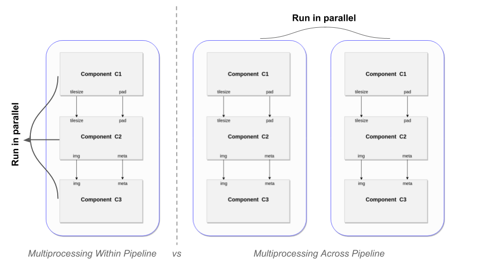
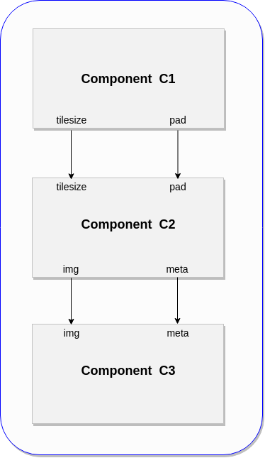
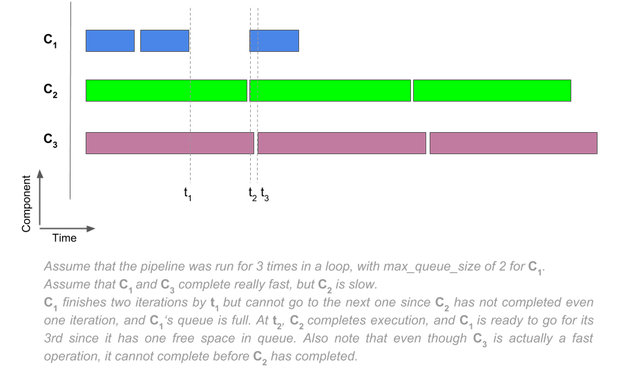
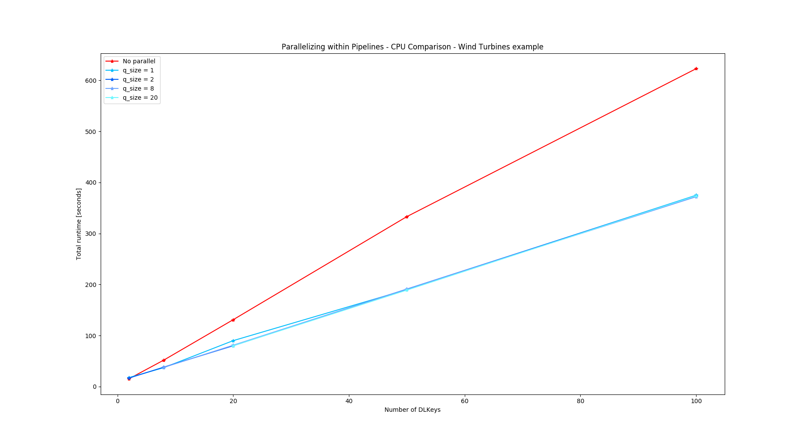
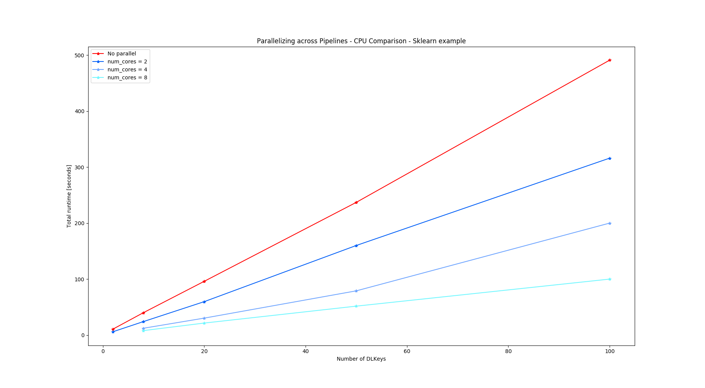

Deployment
Introduction
This framework provides a way to set up model deployment from reusable and modular components. The aim is to generalize how models are deployed at DL, although the tools within this might be useful for other tasks as well.
Tip
You can add the model to a Google bucket and provide the model path as /festivus/<path_to_model_in_googlestorage>
Concepts
Component
This is the most basic unit of work, that wraps a python function, and controls which variables are fed to it and which ones are returned. Every python function that needs to be run should be wrapped in a Component. See Component Function Requirements
Pipeline
An ordered collection of Components, that provides method to execute its components in either a serial or a multiprocessing fashion. A Component cannot be run on its own, and needs to go inside a pipeline.
Function Library
A set of commonly useful functions that can be imported from this library to build Components. See Contributing to Function Library
I/O Handling
Components, when put inside a pipeline, are not automatically connected. The user needs connect them by specifying, for each Component, where it is getting the input variables from, and what variables should be returned at the end of its execution.
Variable Namespace
Since a user controls all the variable flow in a pipeline, it is crucial to understand the scope of each variable created.
-
Static Component Variables: These are visible only to the Component they are set with. Intended use case is to pass all those input variables to a Component function that have a static value and are not needed in any other Component. Consider this to be the equivalent of wrapping the function withfunctools.partial -
Runtime Component Variables: These can be configured to receive values at runtime (i.e the point where the corresponding component function will be run), and can be shared with any other component. Intended use case is to pass I/O values between different components as the pipeline runs. -
Static Pipeline Variables: These are visible to every Component that exists in the pipeline. Intended use case is to set all those input variables to a Component function that have a pre-determinable and static value, and are needed in two or more Components. As an alternative, you could useStatic Component Variablesand set them in each Component definition, but it could get redundant and tedious.
Info
Components handle automatic deletion of Runtime Component Variables (from the same pipeline) once no longer required. See Variable Deletion Routines
Info
Static Pipeline Variables can be accessed even by components that are not part of that pipeline.
Initializing a Component
This is the fist step to creating a Component. The user must provide a unique name for it, and a python function that it wraps. You can do it like
Example
# If the function exists in the function library, pass it as a string
comp = Component(name='my_comp', func='func_in_library')
# If it is a function defined elsewhere, pass the handle
def my_func:
...
comp = Component(name='my_comp', func=my_func)
You could pass additional arguments for debugging, and multiprocessing
Initializing a Pipeline
This is the fist step to creating a Pipeline. The user must provide a unique name for it. You can do it like
Example
pipeline = Pipeline(name='my_pipeline')
Building a Component
Once initialized, you should configure I/O variable routines among other optional things. The user provides where a component gets its input variables from, and what output variables of a component function are recorded (to be used by other components, later in the pipeline). You can optionally do things like saving and printing the variable values at the end of a component execution.
Setting Input Variables
There are three ways of passing input values to a function of a component
- By setting
Component level static_argsfor static values for that Component (the alternative beingfunctools.partial) - By setting
Component level runtime_argsfor values that are made available at runtime (eg. the output of a previous component in the pipeline). - By setting
Pipeline level static_argsfor static values for one/more Components in that Pipeline (the alternative beingfunctools.partialfor each Component that needs it). If you set a variable this way, you should only try to access it viaComponent level runtime_args, and notComponent level static_args - (WARNING: This works only if a component is the first one in a pipeline) By passing a keyword argument for that value to the
runormapmethod of a pipeline which this component is the first member of.
The following cases explain ways to do all the above.
Passing Static Component Variables
Set static_args attribute of a Component. It accepts a dictionary, where each key is the name to set, and each value is the variable value to assign to the name.
Example
comp = Component(name='...')
comp.static_args = dict(products=['usda:naip:rgbn:v1'], bands=['red', 'green', 'blue'])
# Every time the Component's function is run, these values are passed to it.
Passing Runtime Component Variables
If a Component function should get some of its input values from a Runtime Component Variable or a Pipeline Variable (this could be either because the value is coming from a previous step in the pipeline at runtime, or because the value is coming from a preset Pipeline Variable), you should use the runtime_args attribute of a Component to let it know where it should get the inputs from. It accepts a dictionary (key, value), where each key is the name of the variable (in the component's function definition) that the value is passed to, and each value is variable that would be passed. Every key is of str type, and every value takes either <component_obj>.future_variable.<variable_name> or <pipeline_obj>.future_variable.<variable_name> depending on where it is coming from. Note that you cannot provide any other variable as a value. Also, variable names starting with single or double underscore are prohibited.
Example
# Let's create two components that we intend to run serially
def my_func1(tilesize):
return locals()
comp1 = Component(name='comp1', func=my_func1)
def my_func2(tilesize):
tilesize += 2
return locals()
comp2 = Component(name='comp2', func=my_func2)
# Now, if comp1 is the first in a pipeline, we need to pass an initial value for `tilesize`
# One way to do this is to set it as a static arg
comp1.static_args = dict(tilesize=1024)
# Alternatively, I could use functools.partial and not set a static_arg:
my_func1 = partial(my_func1, tilesize=1024)
comp1 = Component(name='comp1', func=my_func1)
# As for comp2, it gets the tilesize from whatever comp1 returns as tilesize.
# To do this, specify the runtime_arg of comp2 to get its `tilesize` from the output value of `tilesize` of comp1
comp2.runtime_args = dict(tilesize=comp1.future_variable.tilesize)
# NOTE: we should also ask comp1 to record its output `tilesize` so that comp2 can access it.
# We look at it in the next section, "Setting Output Variables"
Passing Static Pipeline Variables
Use the add_pipeline_variable method of a Pipeline to set any Static Pipeline Variable. It accepts a dictionary, where each key is the name to set, and each value is the variable value to assign to the name. Access them via specifying the value in a Component's runtime_args attribute.
Example
pipeline = Pipeline(name='...')
pipeline.add_pipeline_variable(dict(unpadded_tilesize=1024, pad=0))
# Now I can use this in any component.
# For example, if I want to use this as the `tilesize` input argument for comp1 from the
# previous example, I could do:
comp1.runtime_args = dict(tilesize=pipeline.future_variable.unpadded_tilesize)
# And I will not need to do comp1.static_args = dict(tilesize=1024)
# NOTE: It is illegal to pass in a pipeline variable as to static_args of a component
comp1.static_args = dict(tilesize=pipeline.future_variable.unpadded_tilesize) # Illegal
Info
See Variable Sharing Routines to understand what variable values might get overwritten
Info
For understanding the lifetime of all these variables, see Variable Deletion Routines
Passing Pipeline-run Variables
This is useful when a pipeline is wrapped inside another pipeline, and some arguments need to be passed during the execution of the outer pipeline to the inner pipeline. Use inner_pipeline.run(kwargs=<kwargs>). See Wrapping Pipeline inside another Pipeline for an example.
Passing Pipeline-map Variables
Analogous to Passing Pipeline-run Variables, this method is useful when you are doing a map call on a pipeline instead of a run call (see Multiprocessing Across Pipeline). You could do inner_pipeline.map(kwargs=<kwargs>) or inner_pipeline.map(n_times=<n_times>). See Multiprocessing Examples
Setting Output Variables
A user can specify which variables from a function should the Component record at the end of its execution, so that it can be made available for use by other components in that/other pipeline(s). Use the to_record attribute of a Component to specify these variables. It accepts a dictionary (key, value), where key is the name of the variable in the component's function and value is the name by which you want this variable to be stored by the component.
Danger
Names for value starting with single or double underscore are prohibited
Example
def my_func():
a1 = 5
a2 = 6
a1 += 7
return locals()
comp = Component(name='my_comp', func=my_func)
comp.to_record = dict(a1='my_a1', a2='a2')
# Whenever this comp is run as part of the pipeline, at the end of the execution of my_func,
# the values `a1` and `a2` are stored as `my_a1` and `a2` in that component `comp`.
# Any component that runs after this component can then access those values as
# comp.future_variable.my_a1, and comp.future_variable.a2
# It is important to note that the value of a variable that gets recorded is the one that exists
# just before the function returns. Intermediate values cannot be recorded/accessed.
# In this example, the value of a1=5 cannot be recorded.
Danger
It is illegal to ask a component to record a variable but never use it. The framework will throw an exception.
Compiling a Pipeline
After you have built all the components, it's time to put them in a pipeline and run them.
Example
pipeline = Pipeline(name='my_pipeline')
# Let's say we want to add the two components comp1 and comp2 (for reference, defined under the section
# "Passing Runtime Component Variables", but not important)
# We add those components while compiling the pipeline
pipeline.compile_pipeline([comp1, comp2])
Info
Optionally, you can pass additional arguments for parallelizing and logging when compiling a pipeline. See Multiprocessing Within Pipeline and Logging
Running a Pipeline
After you have compiled a pipeline, you can run it. You could either run it serially, or could multiprocess it.
Example
# To run it serially
pipeline.run(kwargs=<kwargs_to_pass>)
# where kwargs_to_pass is useful if you want to pass initial inputs to the *first* component in that pipeline.
# If you want to multiprocess across pipelines (this is different from multiprocessing within a pipeline)
pipeline.map(kwargs=<kwargs_to_pass>, num_cores=num_cores)
# or
pipeline.map(n_times=<n_times>, num_cores=num_cores)
See an example for understand the run method.
See Multiprocessing Across Pipeline for details on the map method.
The output to stdout includes timestamp, PID stamp, component name stamp, and run count stamp (i.e i where that component is being executed for the ith time). These stamps are essentially helpful when multiprocessing to separate out messages and logs.
Getting a Summary of Pipeline Runs
The framework is able to give you a summary (number of runs, time taken, order of execution, etc.) for the Pipeline runs that happen. By default, it prints the summary to stdout, but you could also save a graph-like summary to an image file on disk.
Example
Pipeline.summarize() # This will print the summary to stdout
Pipeline.summarize(visualize_path='<path>') # This will print and also save it to an image.
Whenever the summarize method is called, it is able to provide the summary for all runs done until that point. As such, to get a summary for the whole deployment, add this as the last line of the code.
Here is a summary of from the wind turbines example with multiprocessing

Variable Sharing Routines
Components allow variable sharing by providing a routine like <component_obj>.future_variable.<variable_name>. When recording a variable and passing it as a runtime_arg for another component via this routine, care must be taken if the component functions are doing in-place operations.
Consider the following example
Example
inp_image = np.zeros((4,4))
def my_func1(x):
print('I am func1. I received: ', x)
x += 5
return locals()
def my_func2(x):
print('I am func2. I received: ', x)
x += 10
return locals()
def my_func3(x):
print('I am func3. I received: ', x)
x += 2
return locals()
comp1 = Component('comp1', func=my_func1)
comp1.static_args = dict(x=inp_image)
comp1.to_record = dict(x='x')
comp2 = Component('comp2', func=my_func2)
comp2.runtime_args = dict(x=comp1.future_variable.x)
comp3 = Component('comp3', func=my_func3)
comp3.runtime_args = dict(x=comp1.future_variable.x)
pipeline = Pipeline('my_pipeline')
pipeline.compile_pipeline([comp1, comp2, comp3])
pipeline.run()
Output
# Here, the output looks like this:
I am func1. I received: [[0. 0. 0. 0.]
[0. 0. 0. 0.]
[0. 0. 0. 0.]
[0. 0. 0. 0.]]
I am func2. I received: [[5. 5. 5. 5.]
[5. 5. 5. 5.]
[5. 5. 5. 5.]
[5. 5. 5. 5.]]
I am func3. I received: [[15. 15. 15. 15.]
[15. 15. 15. 15.]
[15. 15. 15. 15.]
[15. 15. 15. 15.]]
# Even though we were intending to pass the output of comp1 to comp3, the fact that comp2 did an
# in-place modification to `x` in my_func2 meant that when it was time for `comp1.future_variable.x`
# to get evaluated by comp3, it was already modified.
The framework allows you to access component variables from components belonging to a different pipeline, but there are certain implications leading to them remaining in memory throughout the life of the program. See Variable Deletion Routines
Variable Deletion Routines
In consideration of being memory efficient, this framework runs a cleanup job after running every component, and deletes all (*) those variables that are no longer needed.
Consider the following example
Example
comp1 = Component(...)
comp1.to_record = dict(c1_x='x')
comp2 = Component(...)
comp2.runtime_args = dict(c2_x=comp1.future_variable.x)
comp2.to_record = dict(x='x')
comp3 = Component(...)
comp3.runtime_args = dict(c3_x=comp2.future_variable.x)
pipeline = Pipeline(...)
pipeline.compile_pipeline([comp1, comp2, comp3])
When the pipeline is run, the order of execution of components is comp1->comp2->comp3. After comp2 uses comp1.future_variable.x, it is no longer needed, because comp3 does not use it. As such, the framework goes ahead and deletes comp1.future_variable.x.
This deletion behavior is True for all such variables with the following restrictions:
Variables coming from Pipeline Static Args are not deleted.
The lifetime of such variables are as long as that Pipeline object is in scope.
Variables coming from a component that runs in another pipeline are not deleted.
This is because the source pipeline does not know if the destination pipeline is running in a loop or not. In the above example, if comp1 was part of a different pipeline, then comp1.future_variable.x would not have been deleted. This aspect is crucial to understand when running pipelines in a loop and multiprocessing them (see Multiprocessing Within Pipeline)
Multiprocessing
This framework provides easy ways to multiprocess pipeline runs.
Ways to Multiprocess
There are two ways one could multiprocess: within pipeline and across pipeline

Multiprocessing Within Pipeline
In this case the components of a pipeline run asynchronously, and if the pipeline is being run in a loop, each component in a given iteration of that loop is allowed to start processing as soon as the corresponding component from previous iteration completes its processing. As such, at any given instance, exactly one iteration-instance of a component will be running.
Each component can define its max queue size which controls how far ahead a component can be in the loop iteration with respect to other components that receive runtime_args from it.
| Pipeline | Execution Graph - Component vs Time |
|---|---|
|  |  |
To setup your pipeline to multiprocess this way, provide/do the following:
parallelize=Truewhen compiling the pipeline, likepipeline.compile_pipeline([comp1, comp2], parallelize=True)- Call
pipeline.wait()after calling therunmethod on it. Unless you call this, the async process will be launched but the program will not wait for their completion. If you are running the pipelines in a loop, you could call thewaitmethod towards the end. See the Example on pipeline.wait() below. - [Optional; defaults to 1]
queue_sizeon Component initialization, likecomp = Component(name=..., func=..., queue_size=2). This controls themax queue sizementioned above. - [Optional; defaults to
None]queue_timeouton Component initialization, likecomp = Component(name=..., func=..., queue_timeout=100). This controls the timeout (in seconds) onputandgetmethods. Should be >= 1 if provided. Else, if left to None, it blocks until it cangetorput. See the Info on queue_timeout below. - [Optional; defaults to
True]run_async=Falseon Component initialization if you want that specific component to run in the main process and not in a fork. This is helpful for cases like tensorflow model prediction. If you have a component that runs atfmodel prediction, then it is not a good idea to launch it in a fork: (i) Tensorflow handles its own multiprocessing and doesn't like to be run in a separate forked process, and (ii) even if you do so, you will have to make sure that notf sessionwas initialized in the main process. It's just better to run the model prediction in the main process (this will also guarantee that at any given instance, there is only one model prediction running - thereby using full resources). See the Info on run_async below for some more information.
Example on pipeline.wait()
for i in range(3):
pipeline.run(kwargs=dict(key=i))
pipeline.wait()
Info on queue_timeout
Blocking on put method - If a component has executed its function and is trying to save the variable
requested in its to_record but the queue is full (because other components are yet to use the recorded
variables from previous iterations), it will be blocked until it can find a space in the queue.
If a timeout is provided, and the blocking continues for more than those many seconds, then a
ComponentTimeoutError is raised. If left to None, it will block infinitely (until there is space to put).
Blocking on get method - If a component is trying to get an input runtime variable from the component it
mentioned in its runtime_args but that component has not made the variable available yet (perhaps
because it did not finish its execution yet), it will be blocked until it can get it.
If a timeout is provided, and the blocking continues for more than those many seconds, then a
ComponentTimeoutError is raised. If left to None, it will block infinitely (until it gets).
Info on run_async
If any components are set with run_async=False, then internally, the pipeline first launches all the async tasks, and then sequentially runs these non-async components in the main process. If running in a loop, then all async tasks (i.e from all the loop iterations) are asynchronously spun up, and then each the non-async components are run one after another. This does not mean that the non-async components are blocked until the async ones finish processing; they are only blocked until the async ones are spun up - which takes negligible amount of time.
Multiprocessing when sharing variables across pipelines
If a component of a pipeline is giving one or more of its output variables to a component in another pipeline, then you cannot set the first pipeline to parallelize in two cases:
- If the first pipeline is running in a loop.
- (if not, and) if the second pipeline is both, running in a loop and set to parallelize.
The user is responsible for making sure they avoid these cases, as the framework is not designed to recognize such setup. If this is not followed, it might result in an infinite blocking after the first iteration of the source component, or an unexpected termination. See the Multiprocessing when sharing variables across pipelines example below.
Serializable restriction
If you multiprocess this way, you are restricted to have any variables passed to to_record be serializable.
Note
There is no harm in calling pipeline.wait() even when parallelize=False. As such, when writing a generic component function that loops over a pipeline, it is a good idea to include pipeline.wait(), to allow parallelizing without having to change the function definition.
Multiprocessing when sharing variables across pipelines
# This example shows what is (not) allowed when multiprocessing and sharing variables across pipelines.
def main_func1(x):
return dict(x=x)
def child_func1(x):
x += 10
main_comp1 = Component(name='mc1', func=main_func1)
child_comp1 = Component(name='cc1', func=child_func1)
main_comp1.to_record = repeator('x')
main_comp1.static_args = dict(x=5)
child_comp1.runtime_args = dict(x=main_comp1.future_variable.x)
main_p = Pipeline(name='mp1')
main_p.compile_pipeline([main_comp1], parallelize=True)
child_p = Pipeline(name='cp1')
child_p.compile_pipeline([child_comp1], parallelize=True)
main_p.run()
main_p.wait()
child_p.run()
child_p.wait()
# In the above example, I can parallelize `main_p` because `child_p` is not running
# in a loop even though it is set to parallelize.
# However, the following is invalid:
main_p.run()
main_p.wait()
for i in range(3):
child_p.run()
child_p.wait()
# Here, I cannot set `main_p` to parallelize because `child_p` is running in a loop while
# being set to parallelize.
# My options here are:
# - Set `child_p` parallelize=False, and then I can parallelize `main_p`.
# - Set `main_p` parallelize=False, and then I can parallelize `child_p`.
# Another case that is invalid is to parallelize `main_p` and run it in a loop, irrespective of
# how `child_p` is configured.
for i in range(2):
main_p.run()
main_p.wait()
child_p.run()
child_p.wait()
# This is invalid irrespective of whether `child_p` is set to parallelize and whether `child_p`
# is running in a loop.
Multiprocessing Across Pipeline
In this case the components within a pipeline run sequentially, but the pipeline runs themselves can be parallelized. This is helpful if each component in your pipeline is not parallelizable (or scales across cores) by itself. To setup your pipeline to multiprocess this way, provide/do the following:
- Instead of calling
pipeline.run, use themapmethod and provide the number of cores to multiprocess with:
Example
# If you have an kwargs to be passed to the pipeline (i.e to the first component in the pipeline), use the following signature
pipeline.map(kwargs=dict(key=keys), num_cores=num_cores)
# The value that goes to `kwargs` is a little different from the `run` method. See the INFO below
# If you don't have any kwargs to pass, use the following signature
pipeline.map(n_times=n_times, num_cores=num_cores)
# where n_times is the number of times you want this pipeline to run.
- There is no need to call the
waitmethod; it is handled internally.
kwargs to map
Passing kwargs to map is a little different than that in run method. Here, it expects a dictionary key: value, where each key is the name of an input argument of the function of the first component in the pipeline, and each value is a data structure (for eg. list, tuple) that supports value access by index, supports the len method to return its length, and it contains all the values that would be passed (one-at-a-time) to the function.
Example
# Let us say this is the function we need to run in parallel:
def my_func(a, b):
...
# We have values of a as 2, 3, 4 and b as 1, 6, 7.
# Then do:
inp_dict = dict(a=[2, 3, 4], b=[1, 6, 7])
pipeline.map(kwargs=inp_dict, num_cores=3)
Do not pass both kwargs and n_times
You should pass exactly one of kwargs and n_times depending on your use case. If you pass a value in kwargs, then the number of times to run the pipeline is inferred from the length of the data structure of any of the values in the kwargs you pass.
At this time, you cannot multiprocess within and across pipeline at the same time.
As such, if you call the map method and have parallelize=True set during pipeline compilation, it will throw an exception. Also, when calling the map method, queue_size and run_async of a component are irrelevant.
Comparison of Multiprocessing vs Not
The following figure shows the advantage of multiprocessing within pipeline wrt the wind_turbines example 
The following figure shows the advantage of multiprocessing across pipeline wrt the sklearn example 
Debugging
The framework tries to provide a bunch of options for debugging errors / unexpected outputs. These are especially helpful when multiprocessing.
-
At the simplest, you could use the
to_printorto_recordattributes of a Component to debug when the output does not match the expected output. -
A bit further, you could create a debugger component and plug it in between the components you want to examine. With this debugger component, you can get all the data you want and anaylize / save variables.
-
If you are trying to debug errors, then you could use the flag
debug=Truewhen initializing a component. In this mode the component prints every crucial tiny operation, and those prints formatted as mentioned previously to provide easier understanding of the execution stages. -
Formatted and well understood Exceptions may also be helpful in debugging. See Exceptions
Contributing to Function Library
Every function in the function library must exist in one of the following states:
-
Component Function: These functions are meant to used with Components, and have some requirements. See Component Function Requirements -
Helper Function: These functions are meant to used within Component Functions (NOT Components). They should just be regular python functions, returning whatever variables applicable. Example: model_predict_func
Component Function Requirements
These should be regular python functions with just one requirement: They should return either:
-
(Preferably)
Subset of locals(): Use this to provide the subset of variables that you think are all that an end-user will ever want to access. This will avoid returning unnecessary, intermediate, and garbage variables. The return statement would look something likereturn {'var1': value1, 'var2': value2, ...} -
(Avoid as much as possible)
locals(): The user can then choose whatever variables they want from this function as the outputs. The return statement would look likereturn locals()
Note
Do not return a subset of locals() just because you feel it is memory efficient. Whether you return locals() or not, you would just be returning a reference to it; there is no memory overhead.
Repeator
When providing input dictionaries for Component.to_record (as an example), it might get tedious to do something like: Component.to_record = dict(batch_imgs='batch_imgs', pad='pad', tile='tile', res='res'). Instead, you could use deploy.repeator to avoid the repetition:
Example
from appsci_utils.deployment.deploy import repeator
Component.to_record = repeator('batch_imgs', 'pad', 'tile', 'res')
# You could also pass kwargs
Component.to_record = repeator('batch_imgs', 'pad', tile='tile1')
Exception Handling
To make debugging easier, the framework handles some exceptions efficiently for you to quickly understand what went wrong.
Erros are caught at different stages of the pipeline execution, but here is an overview of the type of exceptions the framework explicitly reports.
-
ComponentInitializationError: When an error occurs at component initialization. -
ComponentRuntimeError: When an error occurs while the component is running. -
ComponentTimeoutError: (only applicable when multiprocessing within pipeline) When a component timesout atgetorsetbased on the timeout provided. See that section for more details. -
KeyExistingError: You would see this exception in case you try to overwrite an existing pipeline key by trying to add a Pipeline Variable (via.add_pipeline_variable) that has a name clash. -
PipelineCompilationError: When an error occurs at pipeline compilation. -
PipelineInitializationError: When an error occurs at pipeline initialization. -
PipelineRuntimeError: When an error occurs while the pipeline is running, but usually before any of its components have started running (in which case it turns to aComponentRuntimeError).
Any errors in the function definition, or otherwise are handled by python natively.
Info
When running in multiprocessing mode, if any error is caught by a child process, the parent prints it to stdout, shuts down every other child process, raises a SystemExit, and the program terminates.
Quick Pointers
- You can pass keyword arguments to the kwarg
kwargsof apipeline.runcommand. These will internally be passed to (and only to) the first component in that pipeline. - Never add anything to a pipeline after calling the
compile_pipelinemethod on it - If you are confused to see example functions return
locals()or a similar dictionary, then read Contributing to Function Library and Component Function Requirements